|
Ritorna all'indice delle parrocchie
Il numero abbinato ad ogni famiglia indica la relativa posizione nello Stato delle Anime
1 - Prete Alessandro Paparelli - Parocho di questa parrocchia
1 - Paparelli Giuseppe - proprietario e livellario lavoratore del suo terreno
2 - Simoncelli Giuseppe - proprietario lavoratore del suo terreno
3 - Borghi Onorata - vedova - proprietaria lavoratore nel suo terreno
4 - Corti Tommaso - proprietario lavoratore del suo terreno
5 - Scali Antonio - proprietario ci va a opera sopra i terreni
6 - Marchetti Giovanni Battista - lavoratore sopra i terreni
7 - Tonini Antonio - proprietario lavoratore del suo terreno
8 - Pierini Sebastiano - va a opera sopra i terreni - 2
9 - Sbardellati Iacomo - va a opera sopra i terreni - 2
10 - Rimini Francesco - proprietario ci va a opera sopra i terreni
11 - Petrini Francesco - proprietario e va a opera sopra i terreni
12 - Borghi Francesco - accatta - 2
13 - Bogi Giuseppe - proprietario va a opera sopra i terreni
14 - Gori Petronilla - va a opera sopra i terreni
15 - Ciacci Anastasia - vedova - va a opera sopra i terreni
16 - Lucattini Pavolo - proprietario e va a opera sopra i terreni
17 - Ginocchi Angelo - proprietario e lavoratore del suo terreno - 1
18 - Presenti Onesta - vedova - va a opera sopra i terreni
19 - Pierini Domenico - proprietario e va a opera sopra terreni
20 - Fraticelli Domenica - vedova - proprietario lavoratore del suo terreno
21 - Marsili Alessandro - proprietario lavoratore del suo terreno
22 - Dignietti Sebastiano - garzone di bestiame
23 - Rossi Giovanni Battista - proprietario lavoratore del suo terreno e fattore di terreni altrui
24 - Spargi Giovanni Battista - Proprietario cerusico della Comunità
25 - Savelli Francesco - proprietario e mezzaiolo lavoratore del sue ed altri terreni
26 - Benevieri Domenico - va a opera sopra i terreni
27 - Caselli Pietro - proprietario e lavoratore del suo terreno
28 - Vellesi Onesta - proprietario di ... e accatta - 3
29 - Damiani Pietro - proprietario va a opera sopra terreni
30 - Manganelli Rosa - vedova - va a opera sopra terreni
31 - Gori Antonio - garzone sopra terreni
32 - Ricci Pietro - proprietario e va a opera sopra terreni
33 - Parri Angelo - fittuario di un molino e mugnaio
34 - Monaci Bartolommeo - garzone lavoratore di terreni
35 - Cocchi Orazio - garzone lavoratore di terreni
36 - Tonini Francesco - proprietario e va a opera sopra terreni
37 - Pesci Matteo - proprietario e va a opera sopra terreni
38 - Pelli Bennardo - lavoratore di terreni
39 - Guidi Pietro - proprietario e lavoratore del suo terreno
40 - Gori Domenico - proprietario e lavoratore del suo terreno
41 - Ciupelli Caterina - proprietario e lavoratore del suo terreno
42 - Monni Giovanni Maria - proprietario e va a opera sopra terreni
43 - Pieri Pasquale - va a opera sopra terreni
44 - Ridolfi Giuseppe - proprietario e lavoratore del suo terreno
45 - Lucattini Caterina - vedova - 1
46 - Carli Carlo - fattore di un affitto di terreni - 1
47 - Viliani Maddalena - vedova - accatta - 2
48 - Presenti Gregorio - proprietario e va a opera sopra terreni
49 - Coppini Jacomo - va a opera sopra terreni e fa la guardia
50 - Manganelli Francesco - proprietario e fa il garzone sopra terreni
51 - Fattorini Antonio - operante sopra terreni
52 - Bogi Crestina - vedova - va a opera e accatta - 2
53 - Petrini Orazio - proprietario attende all'osteria e lavoratore di terreni
54 - Rusci Pietro - proprietario e livellaro e lavoratore de suoi terreni
55 - Cortecci Simone - proprietario e lavoratore del suo terreno
56 - Savelli Giuseppe - proprietario e lavoratore del suo terreno
57 - Lenzi Giuseppe - proprietario e lavoratore del suo terreno
58 - Mazzoni Giovanni - garzone sopra terreni
59 - Scarpi Niccola - vedova - va a opera sopra terreni
60 - Petrini Giuseppe - garzone sopra terreni
61 - Gramigai Domenico - va a opera sopra terreni
62 - Gori Urbano - proprietario e va a opera sopra terreni
63 - Galeotti Giuseppe - va a opera e accatta - 4
64 - Lucarelli Giovanni Battista - proprietario e lavoratore del suo terreno
65 - Pacini Carlo - livellaro di un molino e attende al molino
66 - Guidi Domenico - proprietario e va a opera sopra terreni
67 - Gragnioli Angelo - va a opera sopra terreni
68 - Parsini Mattio - prete - maestro regia scuola della Comunità
69 - Franceschelli Mattio - prete - curato dell'Abbadia Ardenghesca possidente in questa corte e parrocchia - 2
70 - Giudici Lorenzo - contadino mezzaiolo lavoratore del podere
71 - Bani Aistino - contadino mezzaiolo lavoratore del podere
72 - Benedetti Benedetto - attende all'osteria - 2
73 - Arcangeli Michelangelo - proprietario e mezzaiolo di un podere lavoratore del suo a altrui terreno
74 - Battigalli Antonio - proprietario attende (al podere)
75 - Damiani Benedetta - vedova - accatta -3
76 - Fralassi Francesca - vedova - va a opera sopra terreni
77 - Corsi Anna - va a opera sopra terreni e accatta
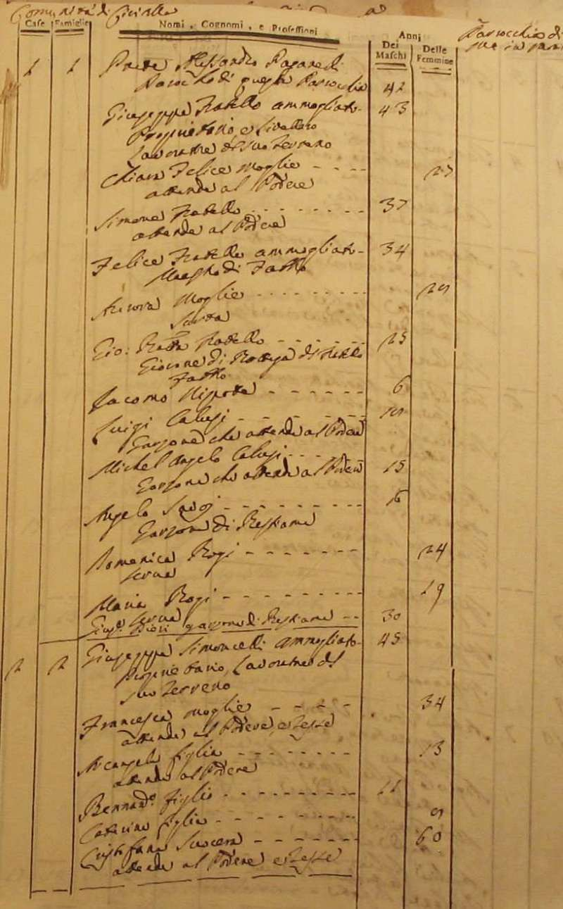
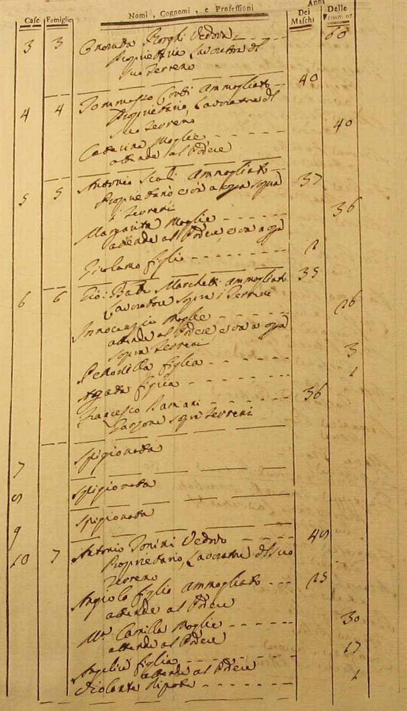
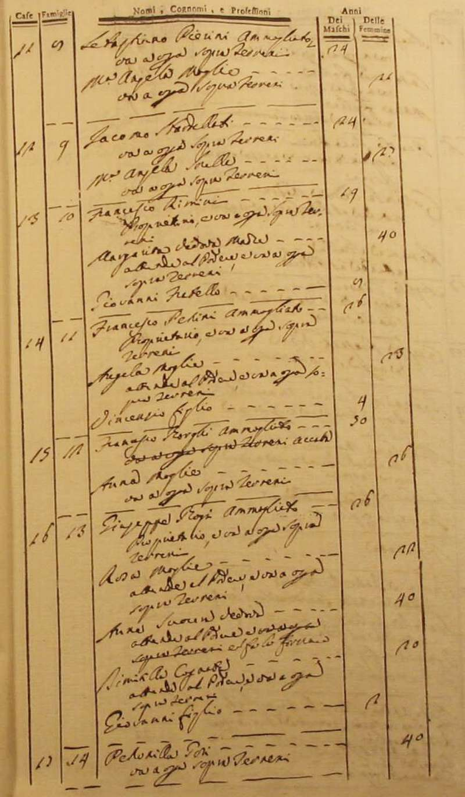
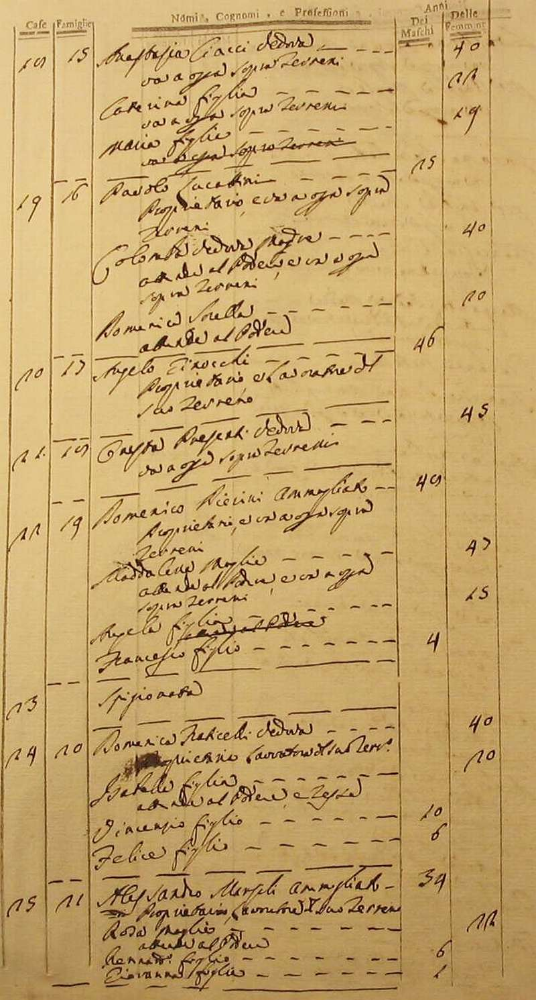
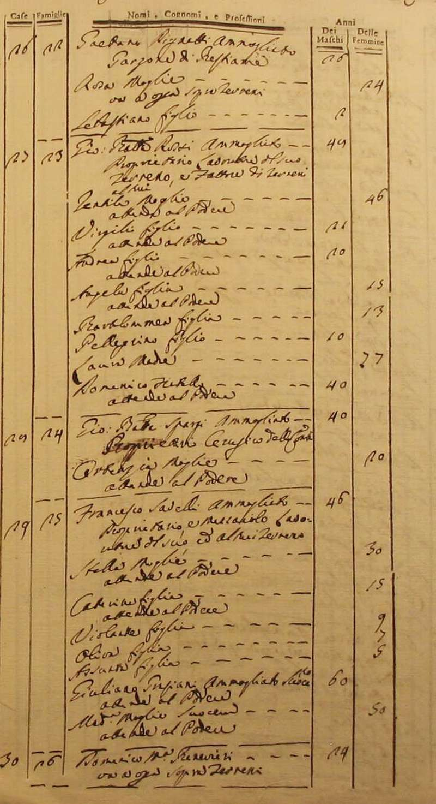
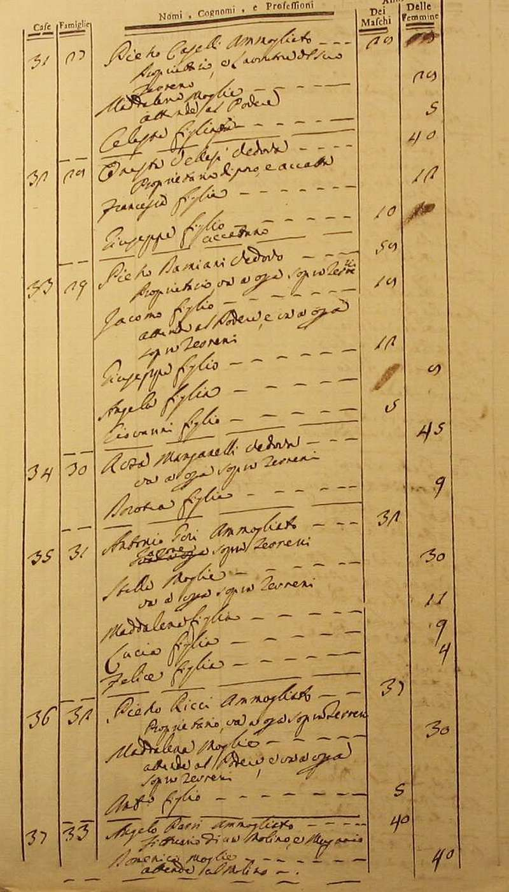
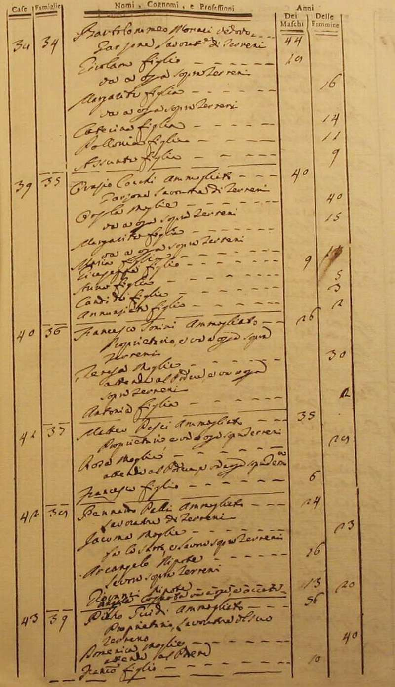
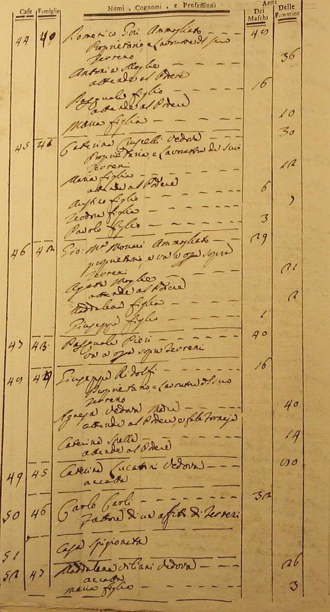
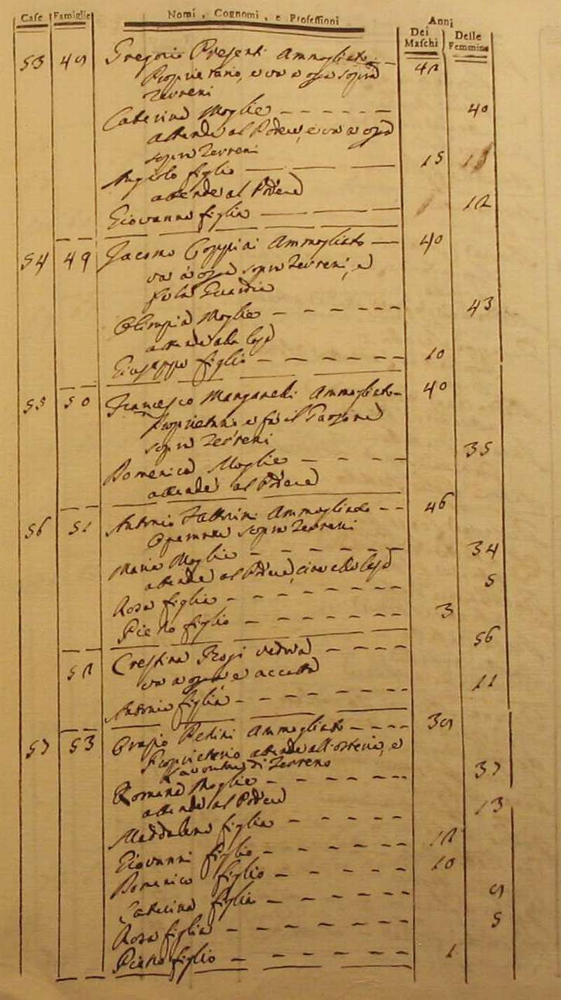
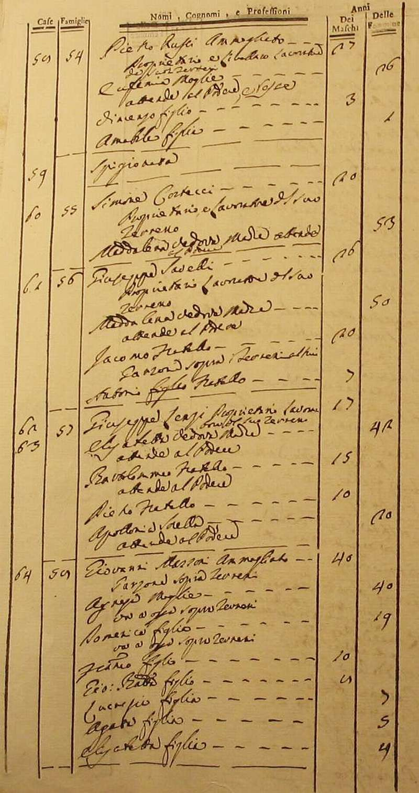
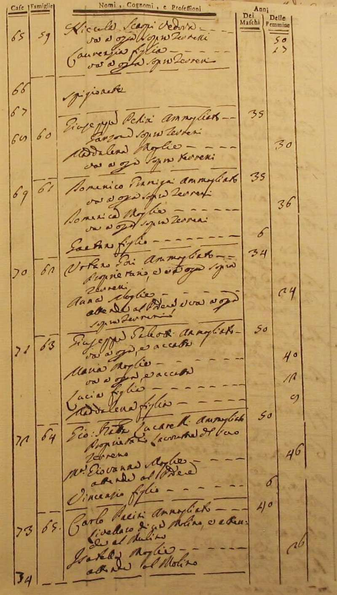
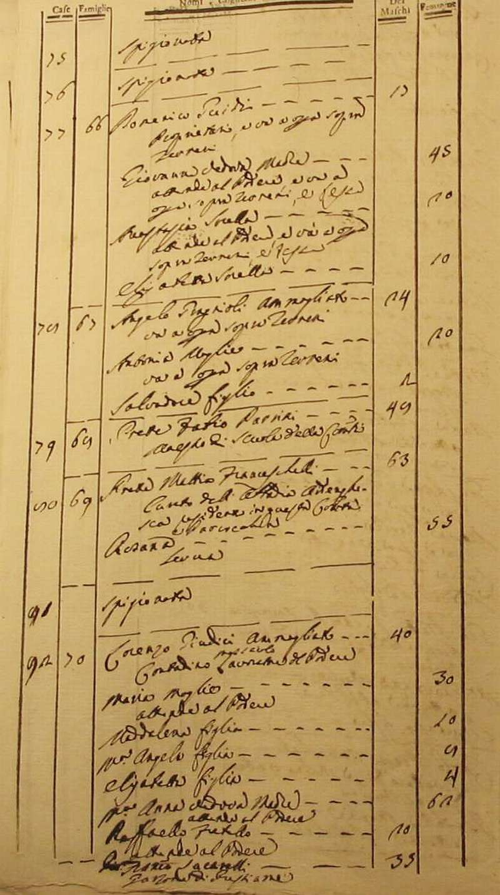
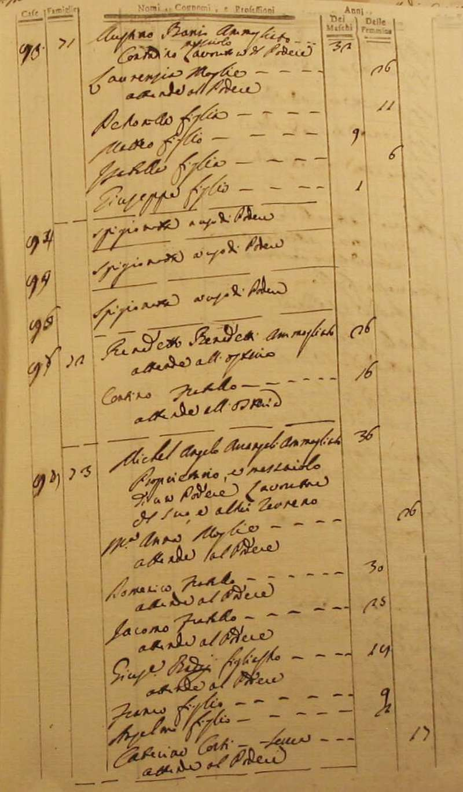
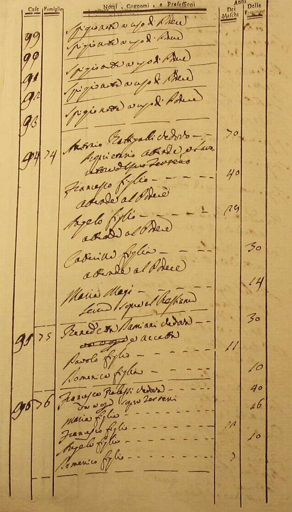
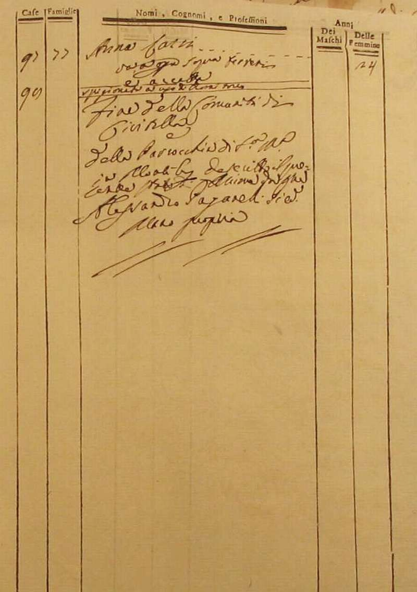
Torna ad inizio pagina
Ritorna all'indice delle parrocchie
| |

|